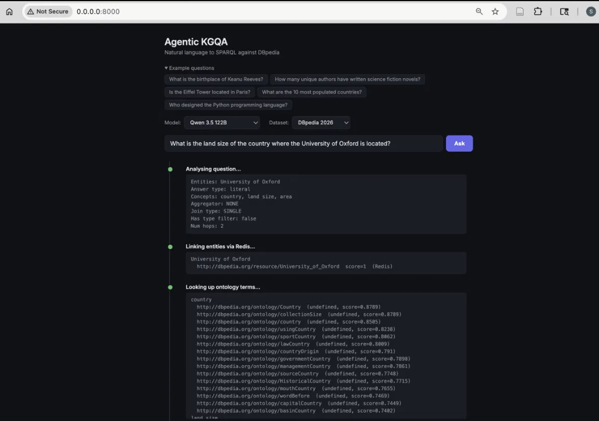

Coding Week 11
August 3 to August 9, 2026
Week 10 closed with a clear objective: Week 11 will be the final week for any major code changes that are directed towards improving the performance, and that's exactly what was done this week. The first targeted fix was to recover the remaining motto question the two-hop chaining alone could not. The second led to reconnecting the live demo interface to the actual production pipeline, which had quietly fallen out of sync with the work done over the past several weeks.
Type-Aware Probe Filtering
Looking closer at why the "Stewart Bovell motto" question was still inconsistent even after two-hop probe chaining done last week, the cause turned out to be a subtle mismatch between what the Validator's probe was finding and what the query actually needed.
For a two-hop question, the first hop needs to resolve to something that can be joined against again in the second hop. When the Validator probed Bovell's entity looking for a "military unit" property, it sometimes surfaced a property whose value was a plain string like "Australian Army" rather than a link to an actual entity. A plain string cannot be used as the subject of a second triple, so even though the probe technically found something, the retry would still fail.
The fix makes the Validator aware of this distinction. When probing the original subject of a multi-hop question, it now only accepts properties whose value is an actual resource link, since that value needs to be usable as the subject of the next triple. This restriction only applies to the first hop of a multi-hop question. For single-hop questions, or for the final hop of a chain, a plain value is often exactly the correct answer, so nothing changes there.
def _probe_keyword(subject: str, concept: str, require_uri_value: bool = False) -> list:
...
uri_filter = "FILTER(ISURI(?o))\n " if require_uri_value else ""
query = f"""
SELECT DISTINCT ?p ?o WHERE {{
<{subject}> ?p ?o .
FILTER(STRSTARTS(STR(?p), "http://dbpedia.org/property/"))
{uri_filter}FILTER({filter_parts})
}}
LIMIT 10
"""Like the two-hop chaining fix from last week, this was gated behind its own feature flag and tested in isolation first. Verified individually on the motto question across both Qwen and Deepseek, it now recovers the correct answer consistently rather than depending on which property happened to surface first from the probe.
Reconnecting the Live Demo to the Production Pipeline
The project has had a browser-based demo since early on, where a question can be typed in and the pipeline's steps are shown live as it works through answering it. Going back to check on it this week revealed it had drifted significantly out of date. It was still running through an older, separate code path from before the Validator's agentic probe existed, meaning none of the improvements made since then, including everything from the past several weeks, were reflected in the live demo at all.
The interface also had two additional tabs for running evaluations and viewing historical results directly in the browser, both built around an evaluation format from earlier in the project that no longer matches how evaluation actually works now. Rather than try to reconnect metrics that no longer apply, those tabs were removed, along with the backend routes they depended on, one of which had already been broken by changes made to the evaluation script weeks ago without getting noticed, since the UI demo was not being actively used.
With the unused parts removed, the remaining question-asking interface was rewired to call the exact same pipeline used everywhere else in the project, rather than the separate older path. The live steps shown in the browser now match what appears in the terminal during a normal run: the Planner's full analysis including hop count and query structure, entity linking results, ontology lookups, the generated query, which fallback strategy fired if any, how many attempts were needed, and the full detail of what the agentic probe found during a retry.

Challenges
The main challenge this week was realising how much can silently drift out of sync in a project with multiple entry points. The core evaluation pipeline had been actively developed and tested every week, but the demo interface, which shares the same underlying agent code, had not been touched since early on and had been quietly running an outdated version of the logic the whole time. Nothing broke loudly enough to notice until it was checked directly. The fix was straightforward once identified, but it was a reminder for me to periodically verify that every surface of the project reflects the same underlying pipeline, not just the one being actively tested against benchmarks.
What's Next
This was the final week reserved for major code changes to improve performance. Week 12 shifts entirely to closing out the project: running the final evaluations on Claude and Qwen, removing dead and unused code across the repository, and reorganising the codebase so it is easier to read and understand for anyone picking it up after GSoC ends.